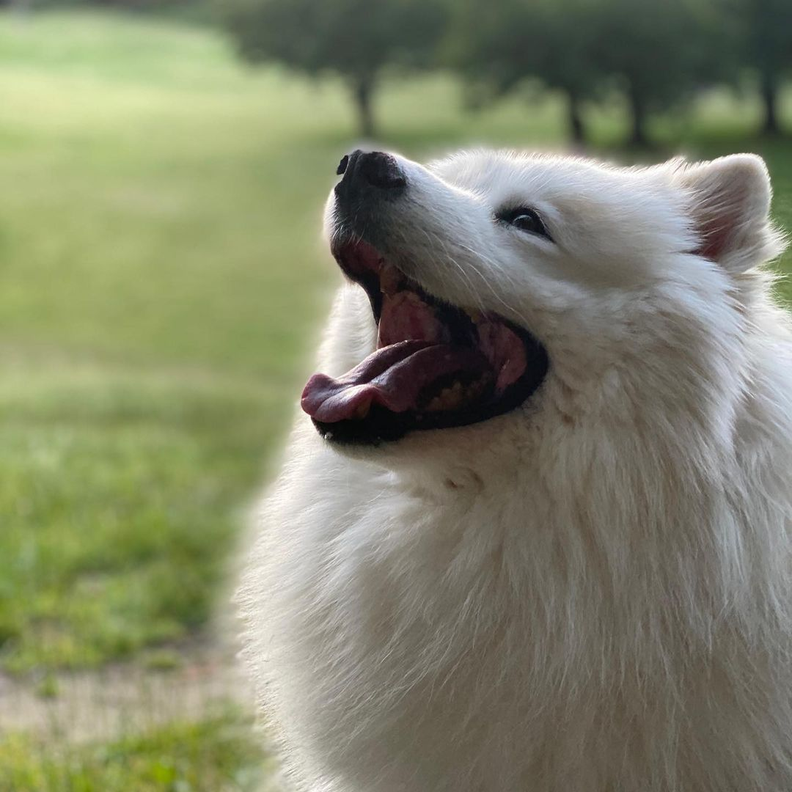
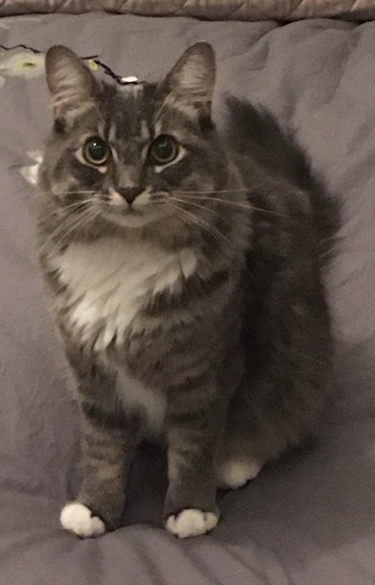
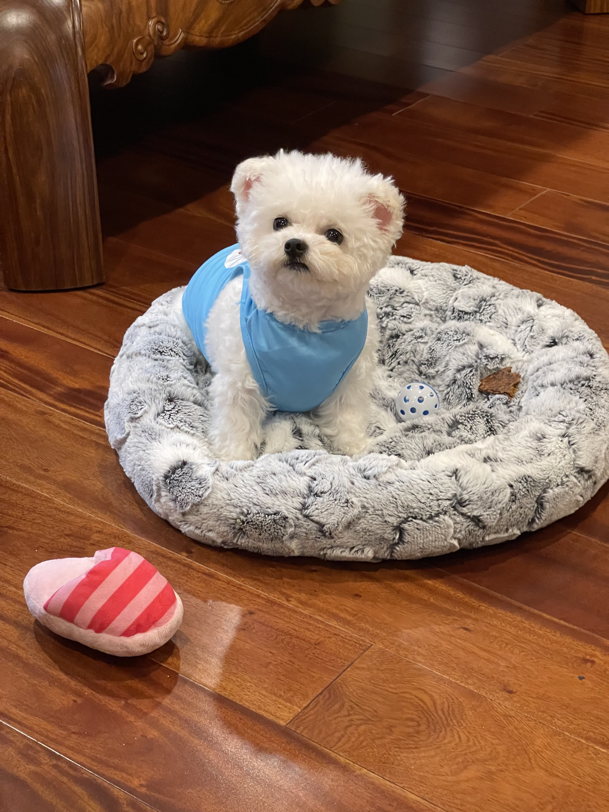
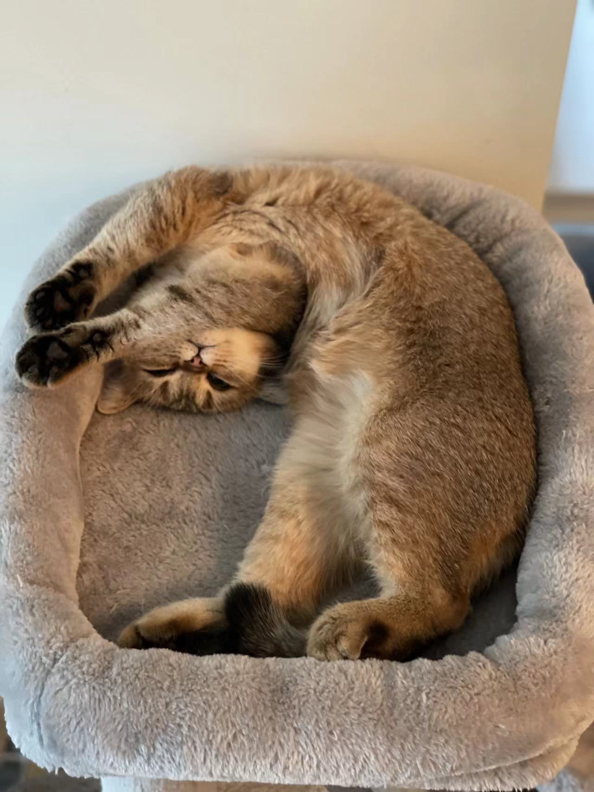

Have you ever thought of all the benefits you will gain from owning a pet? Not only do they positively impact your mental health, but they can also improve your physical health too.
A New Friend ... And A New Family Member!
By having a pet, you not only gain a new friend, but a new family member as well! They are always there with you no matter the situation. It’s like having a friend who you always rely on. With these furry friends, you will never be lonely again. If you care for them, they will reciprocate.


They Can Brighten Up Your Day
Just seeing your cute pet every morning can be a great source of happiness and motivation. Study shows that bonding with your dogs or cats will increase the level of oxytocin, which eases stress and increases your mood. This can be especially important right now when many of us are spending more time in our houses rather than socializing outside.

They Can Make You Become More Caring And Responsible
Yes, having a pet might seem tiring sometimes because you have to clean and feed them. However, the hard work will pay off! By tending them everyday, you will learn the skills to take care of others. They will also make you a kinder person in general. This is also a trait you will want to have if you are a parent.
 
They Make You Physically Active
Who doesn’t want to become more healthy? If you are getting a dog, then good for you! You will take them out for a walk everyday, which means that you will be getting your daily exercises while having fun with your dog.